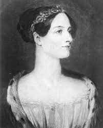

Biografia Ada Lovelace
03 de Novembro de 2023

Augusta Ada Byron King, Condessa de Lovelace (nascida Byron, 10 de dezembro de 1815 — 27 de novembro de 1852), atualmente conhecida como Ada Lovelace, foi uma matemática e escritora inglesa. Hoje é reconhecida principalmente por ter escrito o primeiro algoritmo para ser processado por uma máquina, a máquina analítica de Charles Babbage.
Durante o período em que esteve envolvida com o projeto de Babbage, ela desenvolveu os algoritmos que permitiriam à máquina computar os valores de funções matemáticas, além de publicar uma coleção de notas sobre a máquina analítica. Por esse trabalho é considerada a primeira programadora de toda a história.
Leia Mais
Biografia Mary Kenneth Keller
03 de Novembro de 2023
Nascida em Ohio por volta de 1913, Keller entrou para a ordem das Irmãs de Caridade da Bem-Aventurada Virgem Maria em 1932 e proferiu seus votos em 1940, tornando-se oficialmente freira.
No ano de 1943, conquistou seu diploma de bacharelado em Ciência com ênfase em Matemática na Universidade DePaul, local no qual desenvolveu seu mestrado em Matemática e Física.
Em 1958, Mary começou a trabalhar em uma oficina de ciência da computação
Leia Mais
Biografia Mary Kenneth Keller
03 de Novembro de 2023
Lamarr inventou o sistema que serviu de base para os telefones celulares. Durante a Segunda Guerra Mundial, criou um sofisticado aparelho de interferência em rádio para despistar radares nazistas que patenteou em 1940, usando o seu verdadeiro nome, Hedwig Eva Maria Kiesler.
A ideia surgiu ao lado do compositor George Antheil em frente a um piano. Eles brincavam de dueto, ela repetindo em outra escala as notas que ele tocava, experimentando o controle dos instrumentos, inclusive com a música para o Ballet Mecanique, originalmente escrita para o filme abstrato de Fernand Léger, em 1924.
Leia Mais